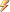

frm |
El tipo frmRegistro expone a los siguientes miembros.
| Nombre | Descripción | |
|---|---|---|
 | Activated | Occurs when the form is activated in code or by the user. (Se hereda de Form) |
| AutoSizeChanged | Occurs when the AutoSize property changes. (Se hereda de Form) | |
| AutoValidateChanged | Occurs when the AutoValidate property changes. (Se hereda de Form) | |
| BackColorChanged | Occurs when the value of the BackColor property changes. (Se hereda de Control) | |
| BackgroundImageChanged | Occurs when the value of the BackgroundImage property changes. (Se hereda de Control) | |
| BackgroundImageLayoutChanged | Occurs when the BackgroundImageLayout property changes. (Se hereda de Control) | |
| BindingContextChanged | Occurs when the value of the BindingContext property changes. (Se hereda de Control) | |
| CausesValidationChanged | Occurs when the value of the CausesValidation property changes. (Se hereda de Control) | |
| ChangeUICues | Occurs when the focus or keyboard user interface (UI) cues change. (Se hereda de Control) | |
| Click | Occurs when the control is clicked. (Se hereda de Control) | |
| ClientSizeChanged | Occurs when the value of the ClientSize property changes. (Se hereda de Control) | |
| ContextMenuStripChanged | Occurs when the value of the ContextMenuStrip property changes. (Se hereda de Control) | |
| ControlAdded | Occurs when a new control is added to the ControlControlCollection. (Se hereda de Control) | |
| ControlRemoved | Occurs when a control is removed from the ControlControlCollection. (Se hereda de Control) | |
| CursorChanged | Occurs when the value of the Cursor property changes. (Se hereda de Control) | |
| DataContextChanged | Occurs when the value of the DataContext property changes. (Se hereda de Control) | |
| Deactivate | Occurs when the form loses focus and is no longer the active form. (Se hereda de Form) | |
| Disposed | Occurs when the component is disposed by a call to the Dispose method. (Se hereda de Component) | |
| DockChanged | Occurs when the value of the Dock property changes. (Se hereda de Control) | |
| DoubleClick | Occurs when the control is double-clicked. (Se hereda de Control) | |
| DpiChanged | Occurs when the DPI setting changes on the display device where the form is currently displayed. (Se hereda de Form) | |
| DpiChangedAfterParent | Occurs when the DPI setting for a control is changed programmatically after the DPI of its parent control or form has changed. (Se hereda de Control) | |
| DpiChangedBeforeParent | Occurs when the DPI setting for a control is changed programmatically before a DPI change event for its parent control or form has occurred. (Se hereda de Control) | |
| DragDrop | Occurs when a drag-and-drop operation is completed. (Se hereda de Control) | |
| DragEnter | Occurs when an object is dragged into the control's bounds. (Se hereda de Control) | |
| DragLeave | Occurs when an object is dragged out of the control's bounds. (Se hereda de Control) | |
| DragOver | Occurs when an object is dragged over the control's bounds. (Se hereda de Control) | |
| EnabledChanged | Occurs when the Enabled property value has changed. (Se hereda de Control) | |
| Enter | Occurs when the control is entered. (Se hereda de Control) | |
| FontChanged | Occurs when the Font property value changes. (Se hereda de Control) | |
| ForeColorChanged | Occurs when the ForeColor property value changes. (Se hereda de Control) | |
| FormBorderColorChanged | (Se hereda de Form) Experimental | |
| FormCaptionBackColorChanged | (Se hereda de Form) Experimental | |
| FormCaptionTextColorChanged | (Se hereda de Form) Experimental | |
| FormClosed | Occurs after the form is closed. (Se hereda de Form) | |
| FormClosing | Occurs before the form is closed. (Se hereda de Form) | |
| FormCornerPreferenceChanged | (Se hereda de Form) Experimental | |
| GiveFeedback | Occurs during a drag operation. (Se hereda de Control) | |
| GotFocus | Occurs when the control receives focus. (Se hereda de Control) | |
| HandleCreated | Occurs when a handle is created for the control. (Se hereda de Control) | |
| HandleDestroyed | Occurs when the control's handle is in the process of being destroyed. (Se hereda de Control) | |
| HelpButtonClicked | Occurs when the Help button is clicked. (Se hereda de Form) | |
| HelpRequested | Occurs when the user requests help for a control. (Se hereda de Control) | |
| ImeModeChanged | Occurs when the ImeMode property has changed. (Se hereda de Control) | |
| InputLanguageChanged | Occurs after the input language of the form has changed. (Se hereda de Form) | |
| InputLanguageChanging | Occurs when the user attempts to change the input language for the form. (Se hereda de Form) | |
| Invalidated | Occurs when a control's display requires redrawing. (Se hereda de Control) | |
| KeyDown | Occurs when a key is pressed while the control has focus. (Se hereda de Control) | |
| KeyPress | Occurs when a character. space or backspace key is pressed while the control has focus. (Se hereda de Control) | |
| KeyUp | Occurs when a key is released while the control has focus. (Se hereda de Control) | |
| Layout | Occurs when a control should reposition its child controls. (Se hereda de Control) | |
| Leave | Occurs when the input focus leaves the control. (Se hereda de Control) | |
| Load | Occurs before a form is displayed for the first time. (Se hereda de Form) | |
| LocationChanged | Occurs when the Location property value has changed. (Se hereda de Control) | |
| LostFocus | Occurs when the control loses focus. (Se hereda de Control) | |
| MarginChanged | Occurs when the control's margin changes. (Se hereda de Control) | |
| MaximizedBoundsChanged | Occurs when the value of the MaximizedBounds property has changed. (Se hereda de Form) | |
| MaximumSizeChanged | Occurs when the value of the MaximumSize property has changed. (Se hereda de Form) | |
| MdiChildActivate | Occurs when a multiple-document interface (MDI) child form is activated or closed within an MDI application. (Se hereda de Form) | |
| MenuComplete | Occurs when the menu of a form loses focus. (Se hereda de Form) | |
| MenuStart | Occurs when the menu of a form receives focus. (Se hereda de Form) | |
| MinimumSizeChanged | Occurs when the value of the MinimumSize property has changed. (Se hereda de Form) | |
| MouseCaptureChanged | Occurs when the control loses mouse capture. (Se hereda de Control) | |
| MouseClick | Occurs when the control is clicked by the mouse. (Se hereda de Control) | |
| MouseDoubleClick | Occurs when the control is double clicked by the mouse. (Se hereda de Control) | |
| MouseDown | Occurs when the mouse pointer is over the control and a mouse button is pressed. (Se hereda de Control) | |
| MouseEnter | Occurs when the mouse pointer enters the control. (Se hereda de Control) | |
| MouseHover | Occurs when the mouse pointer rests on the control. (Se hereda de Control) | |
| MouseLeave | Occurs when the mouse pointer leaves the control. (Se hereda de Control) | |
| MouseMove | Occurs when the mouse pointer is moved over the control. (Se hereda de Control) | |
| MouseUp | Occurs when the mouse pointer is over the control and a mouse button is released. (Se hereda de Control) | |
| MouseWheel | Occurs when the mouse wheel moves while the control has focus. (Se hereda de Control) | |
| Move | Occurs when the control is moved. (Se hereda de Control) | |
| PaddingChanged | Occurs when the control's padding changes. (Se hereda de Control) | |
| Paint | Occurs when the control is redrawn. (Se hereda de Control) | |
| ParentChanged | Occurs when the Parent property value changes. (Se hereda de Control) | |
| PreviewKeyDown | Occurs before the KeyDown event when a key is pressed while focus is on this control. (Se hereda de Control) | |
| QueryAccessibilityHelp | Occurs when AccessibleObject is providing help to accessibility applications. (Se hereda de Control) | |
| QueryContinueDrag | Occurs during a drag-and-drop operation and enables the drag source to determine whether the drag-and-drop operation should be canceled. (Se hereda de Control) | |
| RegionChanged | Occurs when the value of the Region property changes. (Se hereda de Control) | |
| Resize | Occurs when the control is resized. (Se hereda de Control) | |
| ResizeBegin | Occurs when a form enters resizing mode. (Se hereda de Form) | |
| ResizeEnd | Occurs when a form exits resizing mode. (Se hereda de Form) | |
| RightToLeftChanged | Occurs when the RightToLeft property value changes. (Se hereda de Control) | |
| RightToLeftLayoutChanged | Occurs after the value of the RightToLeftLayout property changes. (Se hereda de Form) | |
| Scroll | Occurs when the user or code scrolls through the client area. (Se hereda de ScrollableControl) | |
| Shown | Occurs whenever the form is first displayed. (Se hereda de Form) | |
| SizeChanged | Occurs when the Size property value changes. (Se hereda de Control) | |
| StyleChanged | Occurs when the control style changes. (Se hereda de Control) | |
| SystemColorsChanged | Occurs when the system colors change. (Se hereda de Control) | |
| TabIndexChanged | Occurs when the TabIndex property value changes. (Se hereda de Control) | |
| TabStopChanged | Occurs when the TabStop property value changes. (Se hereda de Control) | |
| TextChanged | Occurs when the Text property value changes. (Se hereda de Control) | |
| Validated | Occurs when the control is finished validating. (Se hereda de Control) | |
| Validating | Occurs when the control is validating. (Se hereda de Control) | |
| VisibleChanged | Occurs when the Visible property value changes. (Se hereda de Control) |